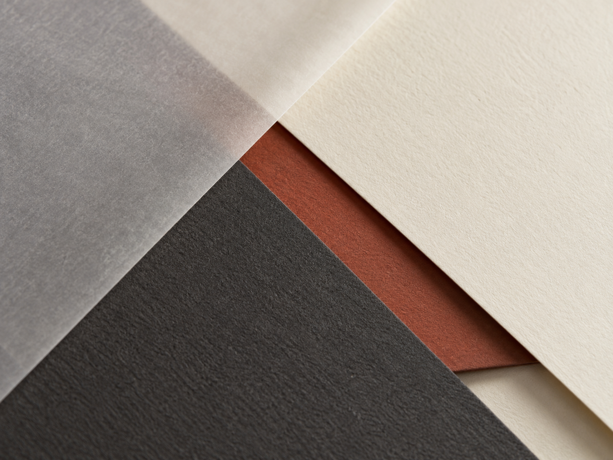
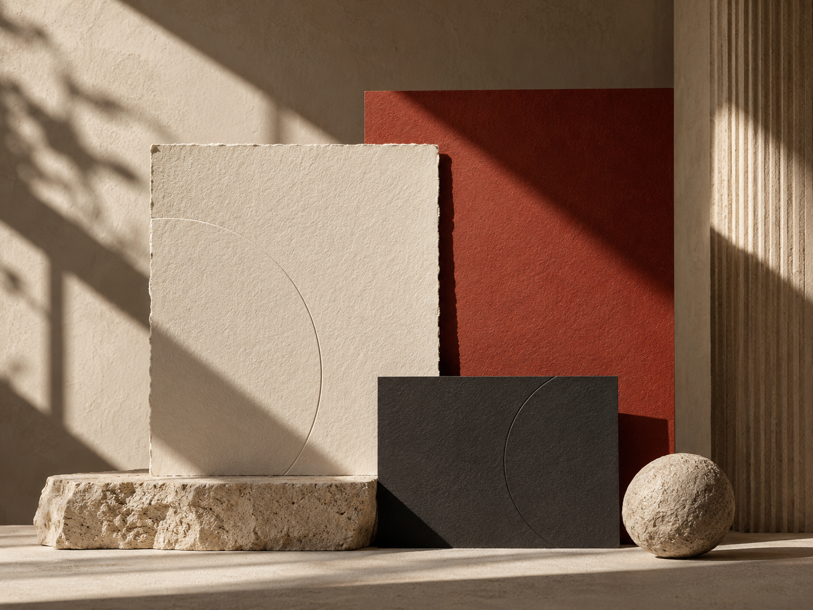
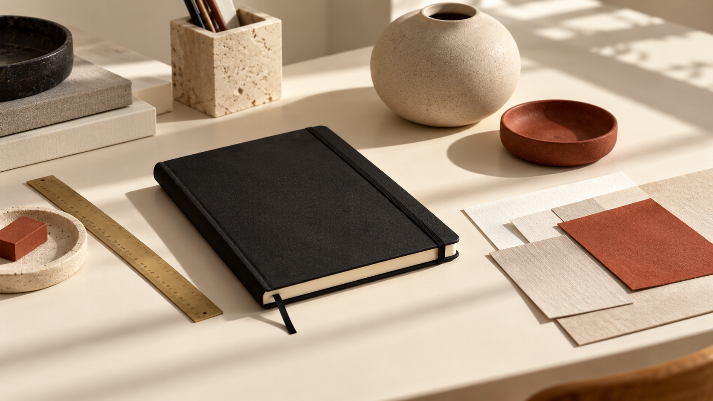

Perspective
A fictional identity study showing how made by Kirat can present strategy, process and application work without implying a real client engagement.
The challenge
Create a visual language that feels considered and tactile without becoming decorative. The sample brief asks the identity to communicate clarity, curiosity and material awareness across print and digital touchpoints.
Creative direction
The direction uses confident spacing, geometric sans-serif typography and restrained diagonal crops. Warm paper, charcoal and clay provide a quiet base while texture and scale create visual interest.
Process
Start with positioning and audience needs, establish a single visual principle, then expand it through typography, image behaviour, layout rhythm and applications. The system is designed to stay coherent without making every touchpoint identical.



Closing summary
This page is intentionally structured as an editable case-study template. Replace all sample text and imagery with verified project material, contributions and outcomes before publishing real work.